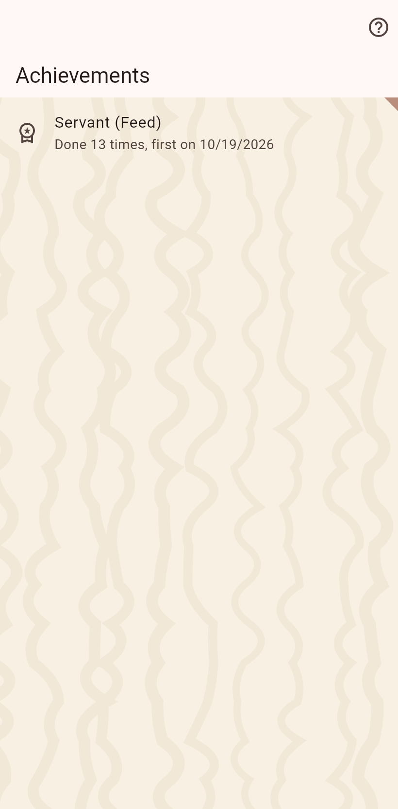

What was earned and only that: full months, years and more of chores with their count, one title per chore at its rank, and the coats unlocked. No progress bars and nothing to chase.

A chore ticked for a full month climbs a rung, a full year the next. The achievements page lists what was reached with its count; one can be deleted for a chore's typo, and stays gone.
A meow when a chore is ticked, a purr when the day's chores are done, a chorus for a ladder climbed, a meow over a purr for an adoption, and confetti. Every sound has its own setting, with several cats' voices to pick from; the switch turns them off.